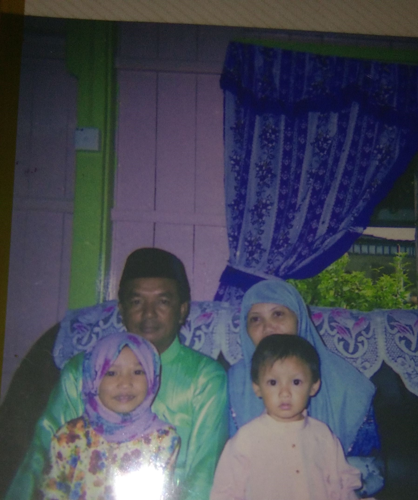

file:///C:/Users/hp/Downloads/individual%20assignment/index.html

My family is everything 💗 Since my dad passed away when I was in standard five, I lived with my mom and my other siblings. My mother was a very loving and caring person. My mother was always supportive of whatever I did. I can’t imagine living life without a mother by my side. Next, is about my siblings. I have 6 sisters, 3 brothers and one younger brother. I also have 18 cute nieces. We always spend time together because our house is so close and we meet every day. I am so thankful to have a big family that always supports whatever I do and takes care of me with lots of love.